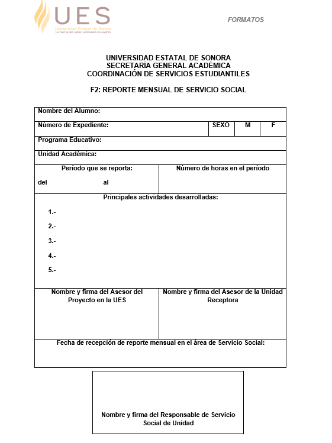

TERCER PASO: Reportar sus 80 horas mensuales, para mínimo los 6 meses que debe durar el Servicio Social.
El Servicio Social consta de 480 horas. Tiene un tiempo mínimo de 6 meses para terminarlo y un tiempo máximo de 2 años. No es posible llevarlo en un tiempo inferior a 6 meses, por lo cual, deben organizar bien sus tiempos para poder terminar su carrera incluyendo el SS en el tiempo que ustedes deseen. Recuerden que sin el Servicio Social No podrán graduarse.
Una vez que se han dado de alta en un proyecto, que llega la solicitud al departamento de Servicio Social, es a partir de ahí que empieza a correr el tiempo. No es a partir de que lo toman como materia.
Para el reporte mensual, cada estudiante debe llenar el Formato F2 y una vez que esté completa la información y firmado, debe enviarlo vía electrónica a su asesor de proyecto, para que lo firme, valide y remita al departamento de Servicio Social para captura en el sistema.
Deben de ser mínimo 6 reportes mensuales de 80 horas cada uno, la entrega es mes con mes.

- Si requieren darse de baja de un proyecto porque ya no desean seguir en él, podrán hacerlo, pero deben llenar el Formato F4 Solicitud de Baja de Servicio Social. Es el único formato que no se envía al asesor del proyecto. Se envía a la persona encargada del Servicio Social en el Programa Educativo para que se lleven a cabo las gestiones pertinentes.
- Las horas que hicieron en el primer proyecto, se acumularán con las que realicen en el segundo proyecto. Solamente podrán cambiarse una vez, en el segundo proyecto deberán culminar el Servicio Social.
.
.